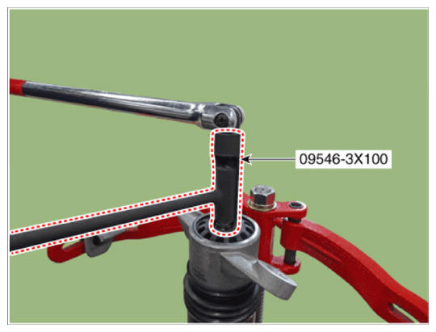
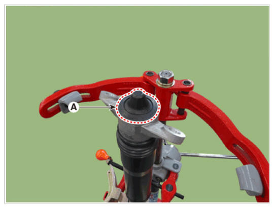

LEMON Manuals
: Even more car manuals for everyone: 1960-2025
Home
>>
Hyundai
>>
2022
>>
Elantra N Line, Standard Trans
>>
Repair and Diagnosis
>>
Suspension
>>
Rear Suspension
>>
Rear Suspension System 1.6L (Except HEV)
>>
Rear Shock Absorber
>>
Repair Procedures
>>
Reassembly
Repair Procedures: Reassembly
To reassembly, reverse the disassembly procedure.
Using SST (09546-3X100), install the lock nut.
NOTE:
Do not reuse the self locking nut.
Tightening torque:
19.6 - 24.5 N.m (2.0 - 2.5 kgf.m, 14.5 - 18.1 lb-ft)

Courtesy of HYUNDAI MOTOR AMERICA
Install the insulator cap (A).

Courtesy of HYUNDAI MOTOR AMERICA